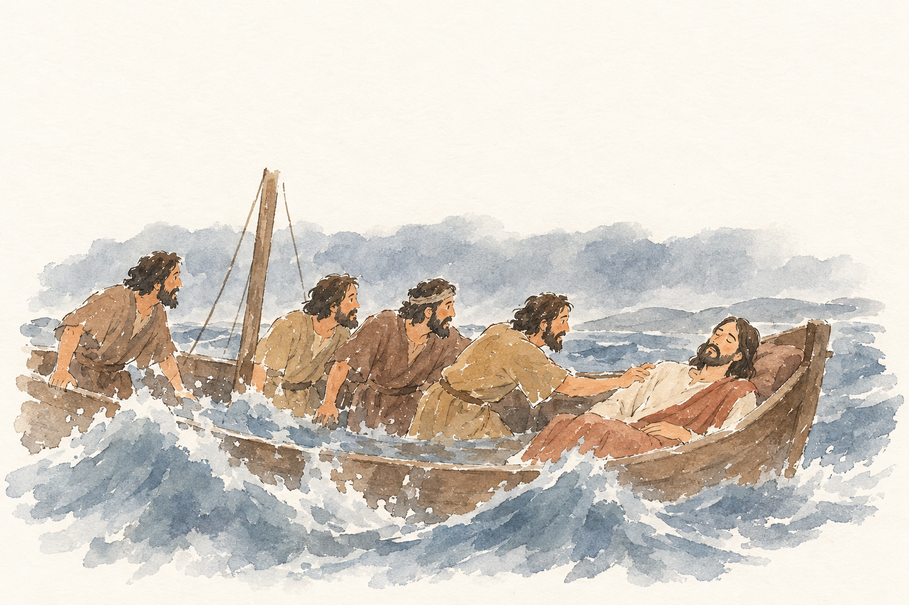
MRK-004-S1__r1v1.png: bestanden, 5 Punkte, Kern 2 Nichts Wesentliches; der genaue Wortlaut der Frage wird nicht beschrieben.
Blind: A small wooden boat is being tossed by rough waves. Four men appear alarmed or intent, and one of them is leaning over to touch or wake the calm reclining man at the right end of the boat. – This appears to illustrate the Bible story of Jesus calming the storm, at the moment when the disciples find Jesus asleep in the boat and one of them wakes him before he calms the wind and waves.
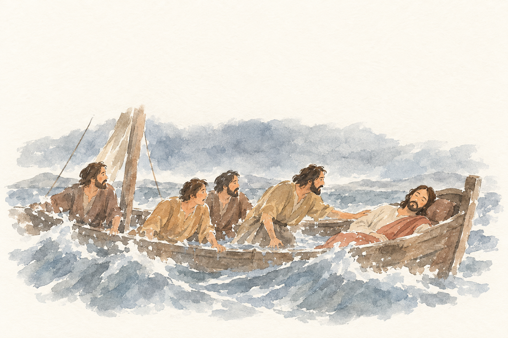
MRK-004-S1__r1v2.png ✔ gewählt: bestanden, 6 Punkte, Kern 2 Nichts Wesentliches; der genaue Wortlaut der Frage wird nicht dargestellt.
Blind: A small wooden boat is being tossed by rough waves under dark clouds. Four men look anxious and brace themselves, while one man on the right sleeps on a cushion and another reaches toward him. – This appears to illustrate the Bible story of Jesus calming the storm, at the moment when Jesus is still asleep in the boat and the disciples are frightened by the storm, just before or as they wake him.
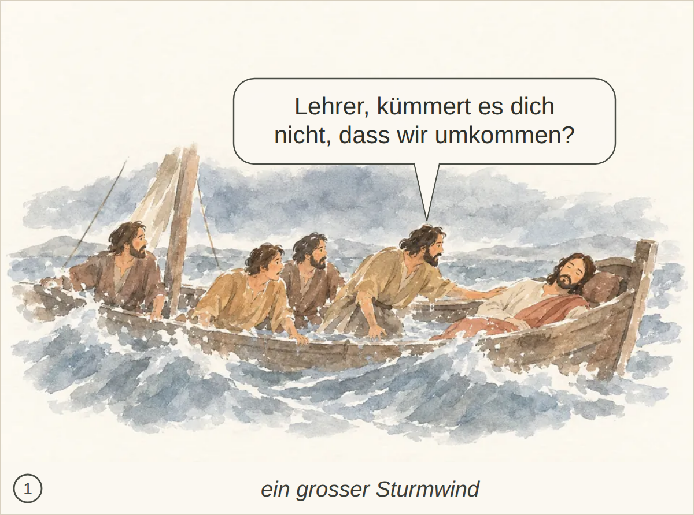
Kachel: bestanden, Kern 2 Nichts Wesentliches fehlt; Sturm, Boot, schlafender Jesus auf dem Kissen und die Jünger, die ihn ängstlich wecken, sind klar erkannt.
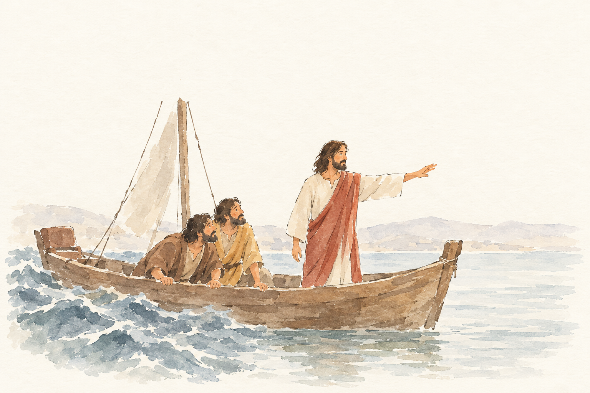
MRK-004-S2__r1v1.png ✔ gewählt: bestanden, 6 Punkte, Kern 2 Die grosse Stille bzw. dass sich Wind und See bereits beruhigen, wird nicht klar gezeigt; das Wasser wirkt noch unruhig.
Blind: Three men are in a wooden boat on choppy water. The standing man in white and red holds out his hand toward the water while the two other men watch him from inside the boat. – This appears to illustrate the Bible story of Jesus calming the storm, at the moment when Jesus raises his hand and commands the wind and waves to be still while the disciples watch.
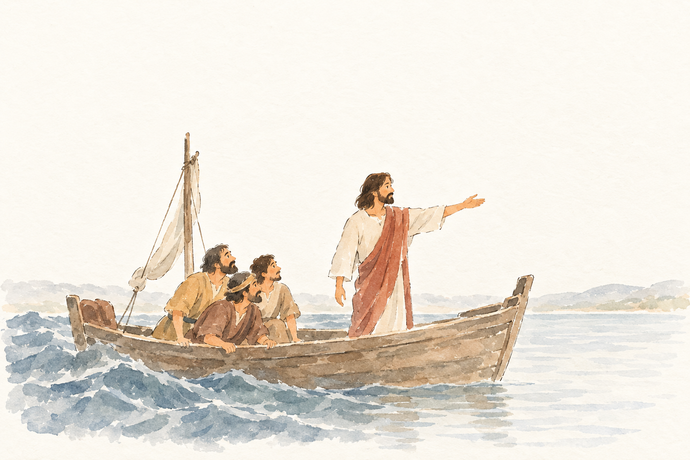
MRK-004-S2__r1v2.png: bestanden, 6 Punkte, Kern 2 Nichts Wesentliches; das Eintreten der grossen Stille ist nur teilweise sichtbar.
Blind: Four men are in a wooden boat on the water. The standing man in white and red stretches his hand outward as the others look toward him from inside the boat. The water near the boat is wavy, while the background is calm and pale. – This likely illustrates the Bible story of Jesus calming the storm, at the moment when Jesus stands in the boat and commands the wind and waves to be still.
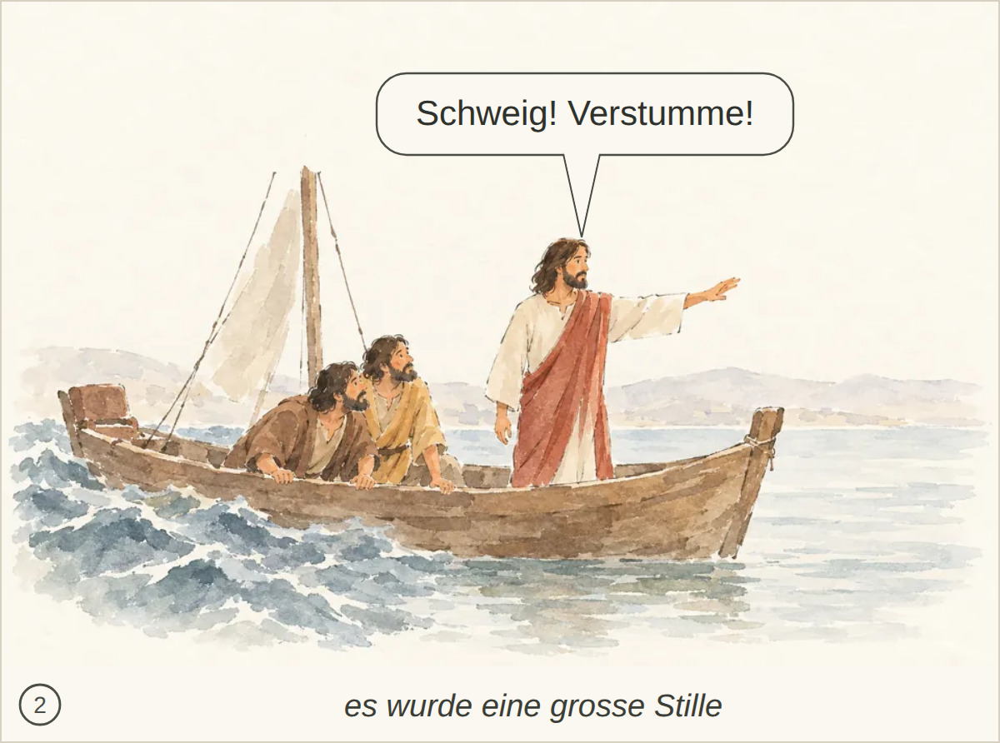
Kachel: bestanden, Kern 2 Nichts Wesentliches fehlt.
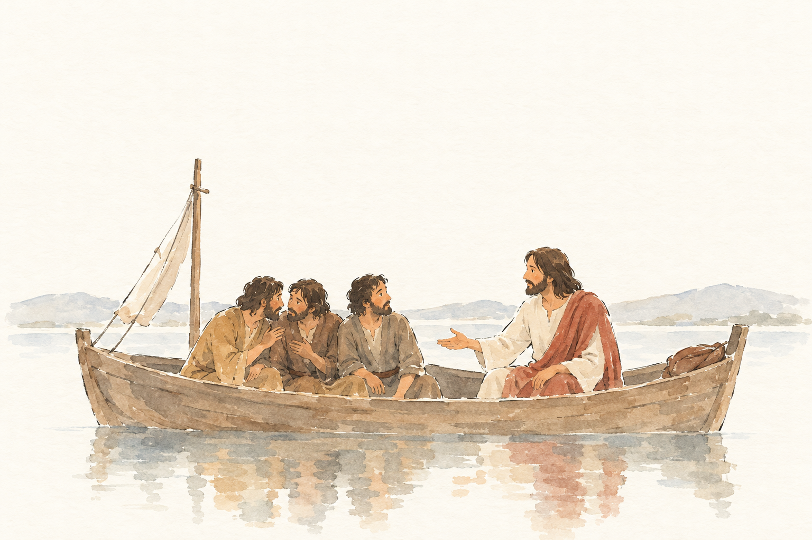
MRK-004-S3__r1v1.png: unklar, 3 Punkte, Kern 1 Die Szene mit Jesus und Jüngern im Boot passt, aber die konkrete Situation nach der Sturmstillung fehlt: ihre Furcht/Staunen, Jesu Frage nach ihrem Glauben und dass Wind und See ihm gehorchen.
Blind: Four men are seated in a wooden boat on calm water. The man in white and red is speaking or gesturing to the other three, who are turned toward him or toward each other as if listening and discussing. – This likely illustrates Jesus with his disciples in a boat on the Sea of Galilee, at a moment when he is speaking or teaching them. There is not enough visible detail to identify a more exact episode with certainty.
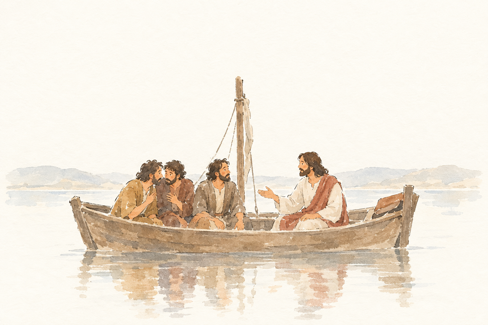
MRK-004-S3__r1v2.png: unklar, 4 Punkte, Kern 1 Es fehlt die Furcht bzw. das große Erstaunen der Jünger sowie der Bezug darauf, dass Jesus Wind und See geboten hat; es wirkt eher wie ruhiges Lehren.
Blind: Four men sit together in a wooden boat on calm water. The man in white with a reddish sash is gesturing as if teaching or explaining something, while the other three men listen and look toward him. – This may illustrate a Bible scene with Jesus teaching his disciples from a boat, possibly on the Sea of Galilee. The exact moment shown appears to be Jesus speaking calmly to the disciples while they sit and listen in the boat.
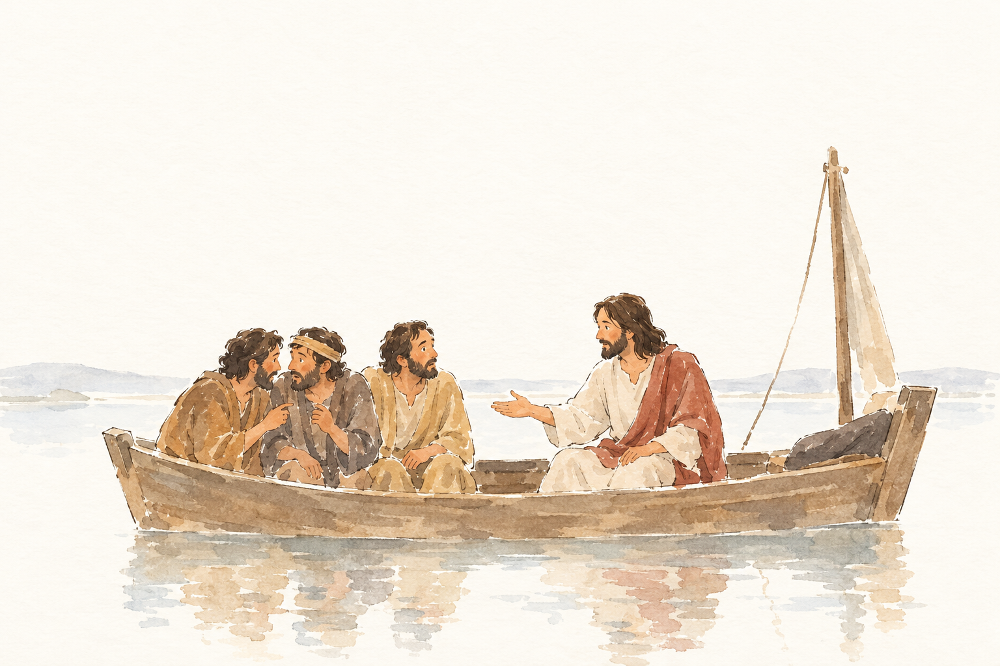
MRK-004-S3__r2v1.png: unklar, 3 Punkte, Kern 1 Die Szene wird nur allgemein als Jesus im Boot beim Sprechen erkannt; es fehlen die Furcht der Jünger, Jesu Frage nach ihrem Glauben und der Hinweis, dass Wind und See ihm gehorchen.
Blind: Four men sit in a wooden boat on calm water. The man in white and reddish-brown is speaking or teaching with an open hand gesture, while the other three men listen and respond. – This may illustrate a Bible scene with Jesus in a boat speaking to his disciples, possibly the moment of teaching or instructing them on the Sea of Galilee.
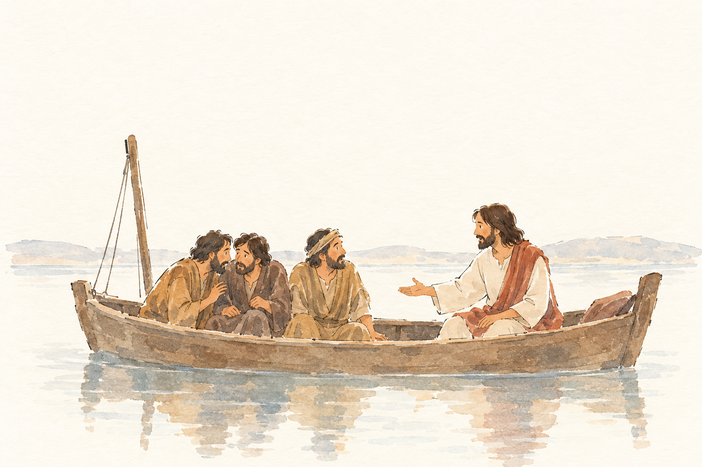
MRK-004-S3__r2v2.png: durchgefallen, 4 Punkte, Kern 1 Die Szene im Boot mit Jesus passt, aber die große Furcht/Staunen der Jünger und ihr Ausspruch, dass Wind und See ihm gehorchen, werden nicht klar erkannt.
Blind: Four men are seated in a wooden boat on calm water. The man in white with a reddish-brown cloak is speaking or explaining something to the others, while the men on the left listen and talk among themselves. – This likely illustrates a Bible scene of Jesus with his disciples in a boat on the Sea of Galilee, at a calm moment when Jesus is teaching or talking to them. No nets, storm, or miracle action is visibly shown, so the exact episode is uncertain.
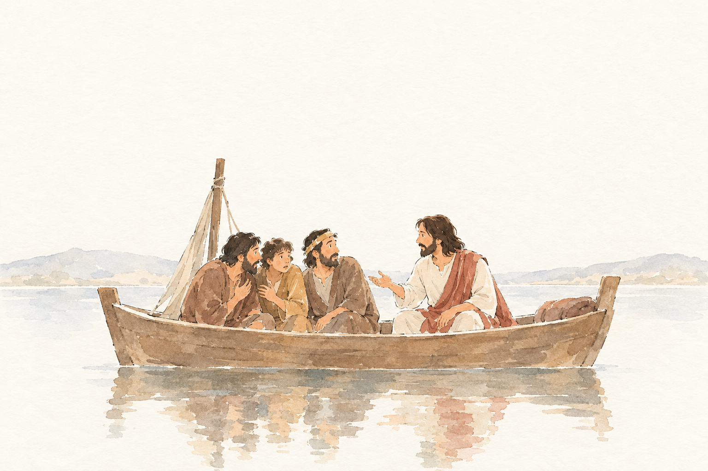
MRK-004-S3__r3v1.png: durchgefallen, 4 Punkte, Kern 1 Die Szene im Boot mit Jesus und Jüngern passt, aber die Furcht/Staunen der Jünger und Jesu Frage nach ihrem Glauben sowie der Bezug zu Wind und See fehlen.
Blind: Four people are seated in a wooden boat on calm water. The man on the right is speaking or explaining something with his hand extended, while the other three listen closely. – This may illustrate a Bible scene with Jesus in a boat teaching or speaking to his disciples, possibly the moment of instructing them while they sit together on the water.
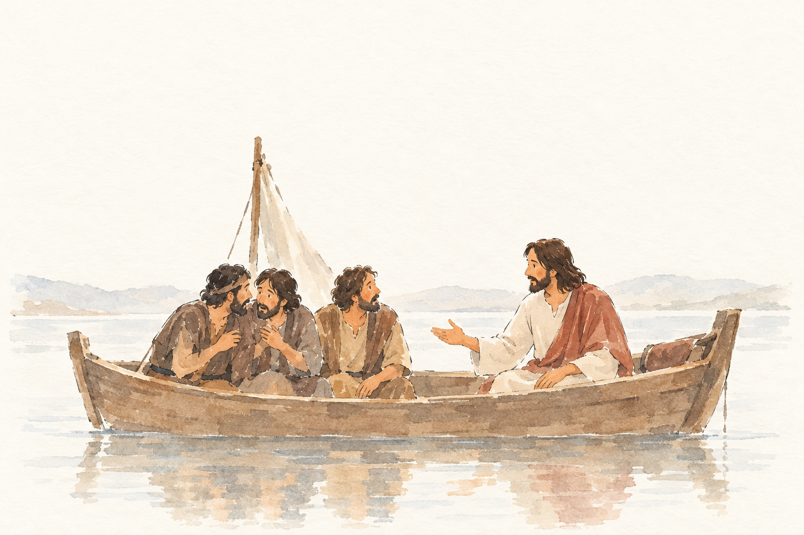
MRK-004-S3__r3v2.png: unklar, 3 Punkte, Kern 1 Die konkrete Szene nach der Sturmstillung fehlt: Jesus tadelt ihre Furcht und ihren mangelnden Glauben; die Jünger sind sehr erschrocken und fragen, wer er ist, dass Wind und See gehorchen.
Blind: Four men sit in a wooden boat on calm water. The man on the right is gesturing as if teaching or speaking, while the three men on the left listen and react to him. – This likely illustrates a Bible story with Jesus in a boat speaking to his disciples, possibly on the Sea of Galilee. The exact moment shown appears to be Jesus teaching or calming and reassuring the disciples while they are seated together in the boat.
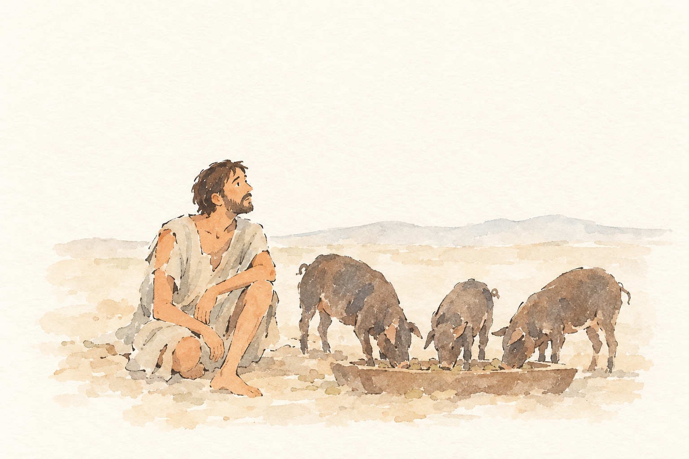
LUK-015-L1__r1v1.png ✔ gewählt: bestanden, 5 Punkte, Kern 2 Das Schuldbekenntnis zum Vater ist nicht ausdrücklich dargestellt, aber der Moment wird klar erkannt.
Blind: A ragged man sits on the ground beside pigs that are eating from a trough. He looks away from them with a sad or thoughtful expression, while the animals keep feeding. – This appears to illustrate the Bible story of the Prodigal Son, at the moment when he is reduced to feeding pigs and looks hungry or despairing before deciding to return to his father.
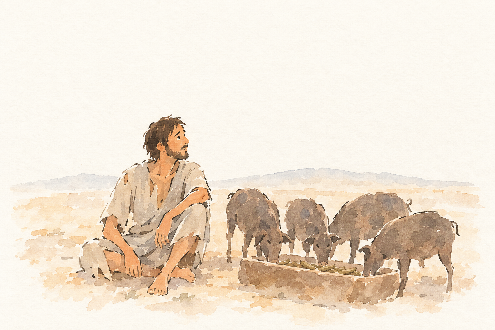
LUK-015-L1__r1v2.png: bestanden, 4 Punkte, Kern 1 Die Reue/innere Umkehr und der Entschluss, zum Vater zurückzukehren und seine Sünde zu bekennen, fehlen.
Blind: A barefoot man sits on the ground beside pigs that are eating from a trough. He looks away and upward while the animals keep their heads down in the food. – This likely illustrates the Bible story of the Prodigal Son, at the moment when he is reduced to feeding pigs and is sitting hungry beside their trough.
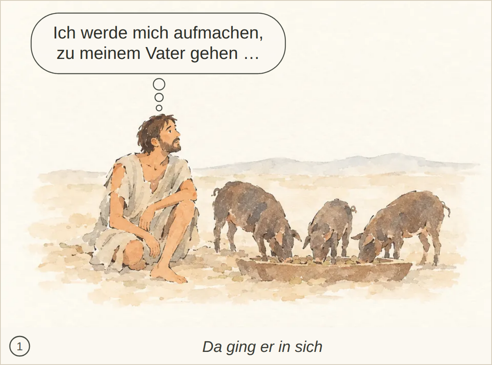
Kachel: bestanden, Kern 2 Nichts Wesentliches; nur Vorgeschichte und genaue Worte des Schuldbekenntnisses fehlen.
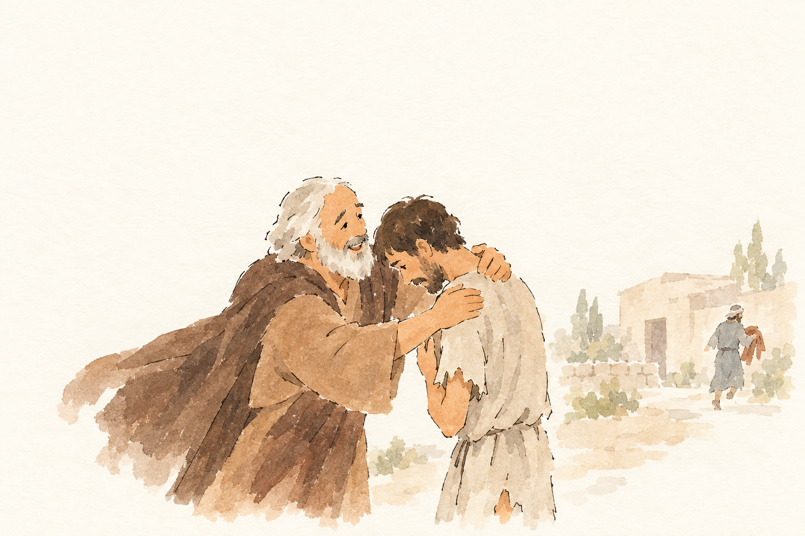
LUK-015-L2__r1v1.png ✔ gewählt: bestanden, 6 Punkte, Kern 2 Nicht ausdrücklich erwähnt: Kuss, Bekenntnis des Sohnes sowie Gewand, Ring, Sandalen, Mastkalb und der Ausspruch des Vaters.
Blind: An elderly man is warmly embracing a younger, ragged-looking man who bows his head. In the background, another adult walks near the buildings while holding a child. The main mood appears to be reunion, forgiveness, or comfort. – This likely illustrates the Bible story of the Prodigal Son, at the moment when the father welcomes and embraces the returning son.
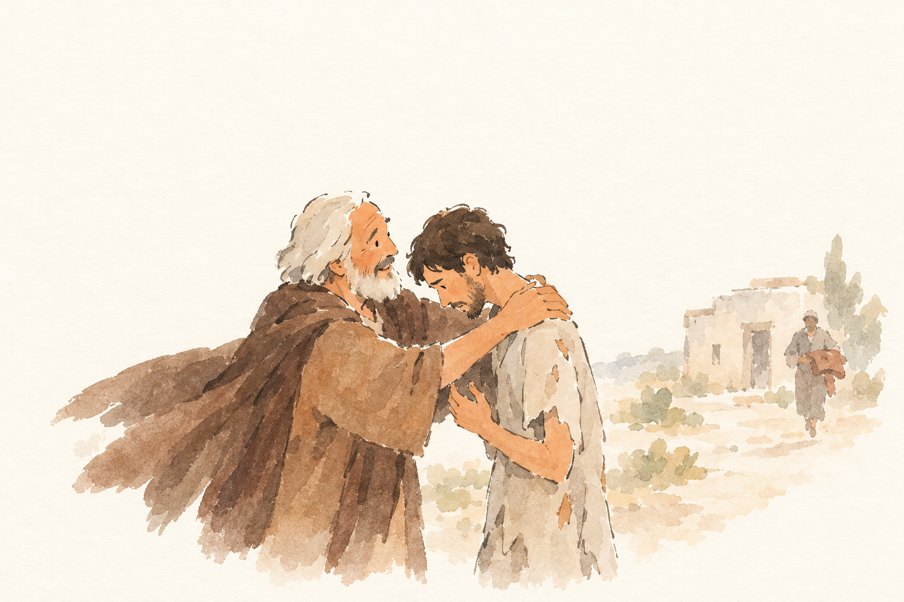
LUK-015-L2__r1v2.png: bestanden, 6 Punkte, Kern 2 Kuss, Bekenntnis des Sohnes sowie Gewand/Ring/Sandalen und Mastkalb werden nicht ausdrücklich erkannt.
Blind: An elderly man is embracing or welcoming a younger man in torn clothing. The younger man appears humbled or sorrowful, while the older man looks compassionate. A third person walks in the background carrying a bundle near a house. – This likely illustrates the Bible story of the Prodigal Son, at the moment when the father welcomes and embraces the returned son after his journey home.
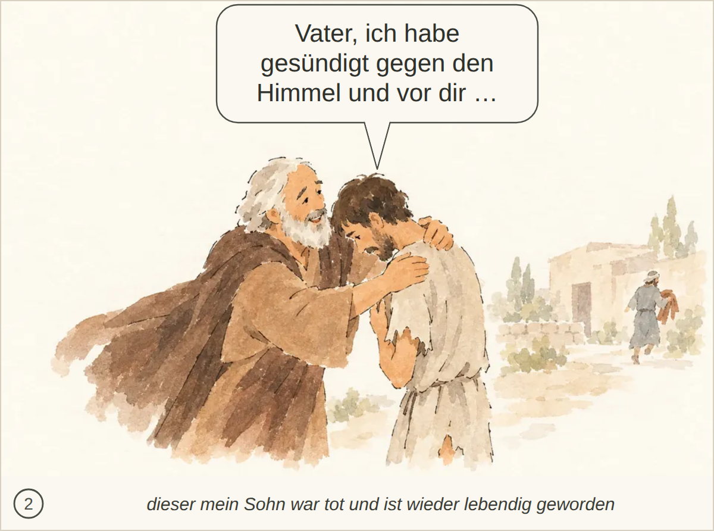
Kachel: unklar, Kern 2 Nicht ausdrücklich erwähnt: der Vater läuft ihm entgegen und küsst ihn; außerdem fehlen Gewand, Ring, Sandalen, Mastkalb und der Ausspruch «tot und wieder lebendig».
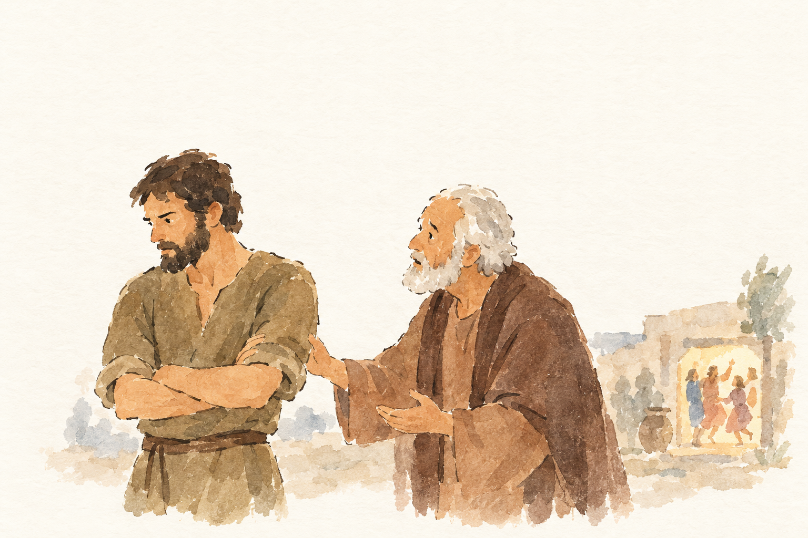
LUK-015-L3__r1v1.png ✔ gewählt: bestanden, 4 Punkte, Kern 2 Keine wesentlichen; die wörtlichen Aussagen des älteren Sohnes und des Vaters sind naturgemäß nicht sichtbar.
Blind: An elderly man is trying to speak to and persuade a younger bearded man. The younger man stands with folded arms and turns away, seeming resistant or upset. In the background, small figures gather near a building, suggesting activity or a celebration. – This may illustrate the Bible parable of the Prodigal Son, specifically the moment when the father pleads with the resentful older son outside while the celebration for the returned younger son is happening in the background.
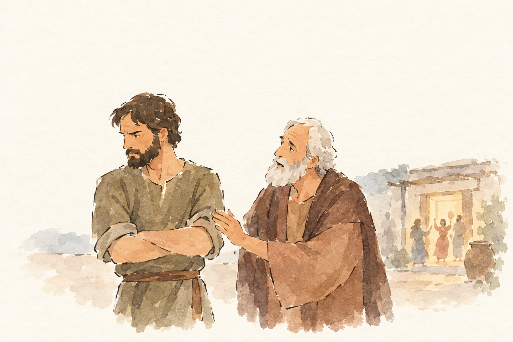
LUK-015-L3__r1v2.png: bestanden, 3 Punkte, Kern 2 Nichts Wesentliches; die gesprochenen Worte des Vaters und des Sohnes sind im Bild naturgemäß nicht erkennbar.
Blind: An elderly bearded man is pleading with or trying to persuade a younger bearded man who stands with crossed arms and an angry, resistant expression. In the background, several small figures gather near a house entrance, suggesting an event or celebration inside or just outside the doorway. – This likely illustrates the Bible story of the Prodigal Son, specifically the moment when the father goes outside to plead with the resentful older son to join the celebration for his returned brother.
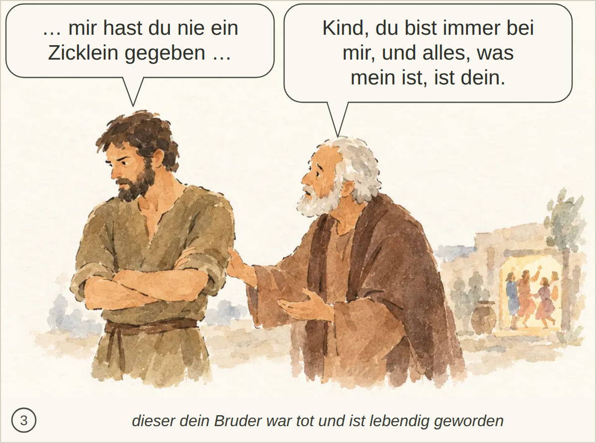
Kachel: bestanden, Kern 2 Nichts Wesentliches; das Zicklein-Zitat wird nicht ausdrücklich erwähnt.